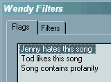
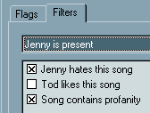
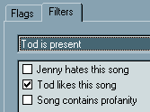

| |

rio car dot org FAQ (Frequently Asked Questions)
Category: Main -> Software and player operation questions
| Answer | · Why do the visuals disappear every time I put it in the car?
(Entry last updated on September 11th, 2002)This is probably the single most common question asked about the player.
This is by design. The company is protecting themselves from litigation. The visuals are so mesmerizing that some might consider them distracting, and therefore dangerous to have running in the car. So, by default, the player reverts to a static text display when it boots on DC (car sled) power.
It reverts to whatever the last static text display was. For example, if your last static display was "Info: Track", then it will revert to that. If your last static display was "Info: Now and Next", it will revert to that.
You can instantly toggle between visuals mode and text mode simply by pressing and holding the bottom button on the faceplate. This makes switching to the visuals your choice. So don't go crying to your lawyer when you rear-end that Ferrari because you were staring at Funnelweb.
Hey, it could be worse. They could make you answer a five-page disclaimer before switching to the visuals...
One way to avoid this feature is to use a hacked kernel that switches to a visual after the player is booted up. For information on using hacked kernels, see here. Remember that if you use a hacked kernel, you do so at your own risk.
If you are having trouble getting the Hijack kernel's "Restore DC Car Visuals" feature working, please click here. Back to Top
| · I just got my new player and I have many gigs of MP3s to install. Is there anything I need to keep in mind?
(Entry last updated on February 16th, 2002)Yes.
First, make sure you are using the latest non-beta software to do your initial loading and organizing of the music. Here are details on how to install the latest software.
Next, plan on doing your loads in small batches, of less than one gigabyte per batch. Although non-beta software should be stable enough to handle very large music loads, this will help protect you from unforseen problems such as power loss or PC crashes. The more batches you do, the less you'll have to "back track" if something goes wrong.
If you are able to use Ethernet, then use it. It is faster than USB for large music uploads, since its transmission protocol uses less software and hardware overhead. If you don't have an ethernet connection already set up, then don't worry about it, because USB is still pretty fast.
Finally, make sure that all your songs have their tag information correctly filled out before you send them to the player. Read this section for more information on why this is so important. Back to Top
| · Why can't I add more than one song at a time?
(Entry last updated on June 1st, 2002)Ah, but you can.
You're probably using the "Edit/New Tune" item in Emplode. Sure, that works, but it's not very efficient.
Let me introduce you to your new friend, Drag and Drop. You open up the Windows Explorer at the same time as Emplode, and you drag your tunes or folders onto the "Playlists" icon in Emplode:
In the example above, this would not only put all of your Madonna tunes onto the player in one shot, but it would also create a playlist called "Madonna". Not only that, but if you have sub-folders for individual albums under the "Madonna" folder, it will create sub-playlists for those albums. Convenient, eh?
Note: It's best to have your tunes properly tagged and organized on your PC's hard disk before doing this. Please read this entry and this entry for information on how to organize your tunes.Back to Top
| · What does the flashing LED on the faceplate mean?
(Entry last updated on February 6th, 2004)The pulsing "standby" LED indicates that the unit is in standby mode. This means that when you press a button on the remote or the front panel, it will wake up and begin playing music instantly, without having to reboot.
(If nothing happens when you press a button, look at the boot log in hypterterminal and have a browse through the troubleshooting section.)
Technically, when the unit goes into standby mode, it actually does the following:
- Pauses playback.
- Spins down the hard disk(s).
- Turns off the display.
- Turns off the Amplifier Remote line (to mute the amps in your car).
Otherwise, everything is running (CPU, software, and all) the same way it was when it was playing.
There are several ways to place the player into standby mode. You can select "Power off" from the main menu, you can press and hold the Source button on the Rio remote control, you can turn off the car's ignition, or (in version 2.0 and later) you can hold the "down" button with the "Power off" menu highlighted for a choice of timed shutdown options.
The player does not normally go into full-power-off mode when it's plugged into AC (home) power. As long as there's power to the AC plug, it will either be playing or it will be in standby mode. If you wish for the player to be fully powered off, unplug it. Note that it is not necessary to put the player into standby mode before removing the power, it's designed so that you can safely remove the power while it's playing tunes.
On DC (car) power, its behavior is slightly different. In the car, it is possible to make the player power off completely. When you turn off the ignition in your car, it should drop into standby mode, and then stay there for a couple minutes before shutting off completely. The amount of in-car standby time is configurable from within the Emplode software, in the "Configure Player" screen.
When it's in standby mode in the car, you can press any button and it will wake up and begin playing, even if the key is off. After you do this, it will continue playing as long as you like. This is useful for situations like tailgate parties. Be careful, though, because leaving it playing for long periods without the engine running can drain your battery.
If you put the player back into standby mode with the ignition key turned off, the standby timeout will begin again, and it will shut itself off completely when the timer expires. You can tell the player has shut itself off completely because blinking light will go out. After the player has fully powered off, you will need to turn on the car's ignition again in order to wake the player.
(Note: This standby-on-ignition behavior applies only to Mark 2 and 2a units. Mark 1's did not have a separate ignition-sense wire.)
Some people have reported problems with their keyless entry systems when the unit is on standby while plugged into the dash. If this happens, use Emplode to reduce the standby time to five seconds or less. Then your keyless-entry problems will go away.
Note: If your player does not go into standby mode when you turn off the car's ignition, check to make sure it is wired correctly, then click here.Back to Top
| · Do I have to put the player into standby mode before I pull the plug?
(Entry last updated on June 18th, 2002)The player is designed so that you can completely remove power from it at any time. You can pull the plug whenever you want, even if it's right in the middle of playing a song. When you apply power to the player again, it should pick up right where it left off.
Here's how it works:
- When you select or shuffle a new playlist, it writes the current song running order onto a special area of the hard disk. This is the only time that the hard disk is mounted read-write while the player is in the car, and it is very brief. And it's designed so that even a power loss at this time would not harm the player. Otherwise, the hard disks are left in read-only mode at all times.
- When the power is lost to the player (and I'm talking about complete power loss here, not just turning off the car's ignition), the player uses its last dying gasp of electricity to write its current position within the song running order into flash RAM. It also writes a few other useful things into flash, things related to the player's current "state".
- When power is re-applied to the player, it re-reads the current running order from this special hard disk partition, then reads the entry from flash RAM to locate the proper position in this running order from which to begin playback.
There might be an occasional, very rare instance of the player forgetting its current position within the playlist. If that happens, it will seem to go back to its last-saved position from the previous power pull when power is re-applied. This should only happen once in a blue moon. I personally haven't seen this happen to my player in months. If it happens to you all the time, for instance, if it happens to you every time you turn off the car's ignition, please click here for information on how to fix it.
There may also be an indexing issue with Variable Bit Rate MP3 files, discussed here. However, this is totally unrelated to pulling the power.
The only time when it's dangerous to pull the power is when it's in the middle of a synchronization operation, or when you're hacking on the player's hard disk at the shell prompt and you've manually placed the disk drives into read-write mode. If you lose power at this time, you might corrupt the files that were being transferred at the time of the power loss. If so, those files would need to be sent to the player again, and then a disk check should be performed.Back to Top
| · Can I copy MP3 files back onto my PC from the player?
(Entry last updated on March 17th, 2003)As of Emplode version 2.0, YES. Right-click on any file or playlist and select "Download".
And there was much rejoicing.
This can also be done with Jemplode, including advanced options for preserving the tree structure and formatting the file names based on the track information. Back to Top
| · Is there anything I should keep in mind when I grab files from the player?
(Entry last updated on March 17th, 2003)If you made edits to the song information in Emplode, and now you want to migrate those changes back to the files on your PC, there's a problem.
When you change the song information in Emplode, it's only changing the player's internal database. The MP3 files and their ID3 tags are not altered. So if you copy the songs from the player, their tags are still the same old tags they were when you sent them to the player in the first place. The Emplode software does not write tags as it downloads.
So if you made changes to the song information, you can't 'rescue' that data by downloading the songs with Emplode. Generally, it's best to make sure all your tags are correct before sending your songs to the player in the first place.
Fortunately, the Jemplode software has an option to write corrected tags back to the files as they're downloaded, provided that you set its options correctly. So if you need your player track information written to your MP3 files, you can use Jemplode to do it.
Back to Top
| · Can I back up the player's playlists and music files?
(Entry last updated on March 13th, 2008)Yes, but it's a pain in the ass.
Most people don't bother with doing this, as it's much easier to just leave your MP3s on the PC's hard disk. If you keep your MP3s organized on your PC's hard disk in the same way they're organized on the player (as described here), it's pretty easy to rebuild your player if its hard disk needs to be replaced.
If you really want to go to the trouble of a file-by-file backup of the player, you can do it via FTP. There are a few different methods.
Initial Preparation.
- Make sure your computer is running Windows 2000, Windows XP, or later, and is using the NTFS file system (FAT file system does not allow big files). Mac and Linux users, you can also do similar procedures at your shell prompt, but my instructions here are windows-specific.
- Make sure your computer has enough free hard disk space for a complete backup. For instance, if your player has a 30-gigabyte disk drive you need more than 30 gigabytes free on your computer.
- Make sure you own a Mk2 or Mk2a player. Since the Mk1 doesn't have an ethernet port and therefore can't use FTP, you are out of luck if you own a Mk1. In that case, just keep your MP3s organized on your PC as described here.
- Install the player software version 2.0 final as described here. Make sure to install the developer version.
- Install an FTP server on the player. The easiest way to do this is by installing the Hijack kernel using the instructions here.
- Make sure you've got a working ethernet connection to the player. If you're having trouble getting ethernet working, click here.
- Make sure you know your player's IP address.
- This procedure makes the empeg's disk drive run constantly for a very long period of time. Make sure your player is well-ventilated when you do this. If you have it in a docking station, make sure the docking station has a fan. If you have the player sitting loose on your desk, check every once in a while to make sure it isn't getting too hot by peeking at the Hijack temperature warning screen.
Backup Method 1: Complete disk image backup.
(Please note: This method has not been fully tested. If you try this, please report success or failure. Thanks.)
This method is the simplest and easiest to do. The result is one large image file representing the empeg's hard disk. But it has drawbacks: It takes the longest time, since it's also backing up the empty disk space on the player. Also, the restore operation only works properly if it's being restored to a hard disk that is the same size as the one when the backup was made, so you can't restore to a larger hard disk. Finally, there is no way to "resume" a backup or restore operation if something goes wrong halfway through.
To make a backup of the player:
- Pause the player, or put it in standby mode.
- Create a folder on your PC to store the backups. Name it whatever you want.
- Open a command prompt (DOS prompt) on your computer. Use the CD command to change to the folder you created.
- Type FTP (Enter) to start the command-line FTP client.
- You should see an ftp> prompt.
- Type open (empeg's IP address) (Enter).
- When it prompts for the user name, press Enter. It should say Login okay.
- Type binary (Enter).
- Type GET /dev/hda empeg_drive_0.bak (Enter).
- Wait a very long time. The larger the hard disk, the longer the wait. Expect at least 10 hours for a 30-gigabyte hard disk.
- Type GET /dev/hdb empeg_drive_1.bak (Enter) if you have a second hard disk. Wait again.
- Type quit (Enter).
You should now have one or two very large disk image files as backups.
To restore the full image backup(s) to the player:
- Repair/rebuild/replace the player as necessary to get it working again. If replacing a bad hard disk, refer to the Disk Upgrade Guide for details on how to use the builder image to partition and format the hard disk(s). With this method, the replacement hard disk(s) must be the same size as the original.
- Get 2.0 developer and Hijack onto the new/repaired/rebuilt player as described above.
- Using a Hyperterminal connection to the player, exit the player software to the shell prompt as described here. Close Hyperterminal with the player still sitting at its shell prompt.
- Open the DOS command prompt on your PC, and use the CD command to change to the folder with your backups.
- Type FTP (Enter) to start the command-line FTP client.
- Type open (empeg's IP address) (Enter).
- When it prompts for the user name, press Enter. It should say Login okay.
- Type binary (Enter).
- Type PUT empeg_drive_0.bak /dev/hda (Enter), and wait a long time.
- Type PUT empeg_drive_1.bak /dev/hdb (Enter) if you have a second hard disk. Wait again.
- Type quit (Enter).
- Reboot the player.
- If you restored the data to a different player, you might also need to re-enter the information stored in flash RAM, such as your fader and balance settings, your dimmer settings, etc.
Backup Method 2: File by file backup with Dynamic Data Partition image file.
(Please note: This method has not been fully tested. If you try this, please report success or failure. Thanks.)
This method is more complicated. The result is a large number of loose files representing most of the song data on the player, plus the configuration file and a file for the dynamic data partition. The loose MP3 files will be the player's internal FID names. This method has the advantage of taking less time because it's not backing up blank space. Also, the restore operation can be done on any size hard disk. Finally, if something goes wrong with the restore operation halfway through, you might be able to resume the operation, depending on the features of your FTP client software.
To make a file-by-file backup of the player:
- Choose and install a piece of graphical FTP client software for your PC. There are many free ones available on the internet. Examples of such programs are CuteFTP or WS_FTP.
- Pause the player, or put it in standby mode.
- Create a folder on your PC to store the backups. Name it whatever you want.
- Using the FTP client on your PC, copy the following files from the player to your desired backup location:
All files in /drive0/fids/
All files in /drive1/fids/ (if you have two disk drives in the player)
/drive0/var/config.ini
(Note: You should probably make sure that these are sorted into separate sub folders underneath your backup folder, to make the restore operation easier)
Make sure to use binary mode on your FTP client software when you do this.
- When it's done (several hours), close the FTP client software.
- Open a command prompt (DOS prompt) on your computer. Use the CD command to change to the folder you created.
- Type FTP (Enter) to start the command-line FTP client.
- You should see an ftp> prompt.
- Type open (empeg's IP address) (Enter).
- When it prompts for the user name, press Enter. It should say Login okay.
- Type binary (Enter).
- Type GET /dev/hda3 empeg_dynamic_data.bak (Enter). The dynamic data partition isn't very big, so you shouldn't need to wait very long.
- Type quit (Enter).
To restore the file by file backup to the player:
- Repair/rebuild/replace the player as necessary to get it working again. If replacing a bad hard disk, refer to the Disk Upgrade Guide for details on how to use the builder image to partition and format the hard disk(s).
- Get 2.0 developer and Hijack onto the new/repaired/rebuilt player as described above.
- Using a Hyperterminal connection to the player, exit the player software to the shell prompt as described here. Close Hyperterminal with the player still sitting at its shell prompt.
- Set the disk drives to read-write using Hijack as detailed here.
- Using your graphical FTP client software, wipe out everything in /drive0/fids/ and /drive1/fids/ (if anything is there).
- Put your FTP client software into Binary mode. Copy all the backed-up files onto the player, back to their original locations. (Except empeg_dynamic_data.bak, which we'll deal with below.)
- If you backed up a two-drive player, it's possible to restore everything onto a one-drive player if there's enough space. Just put the files that came from the old drive1/fids into the new player's drive0/fids folder.
- Delete the following files from the player if they exist:
/drive0/var/database
/drive0/var/playlists
/drive0/var/tags
- Put the player's hard disks back into read-only mode (don't forget this!).
- Close your graphical FTP client software.
- Open the DOS command prompt on your PC, and use the CD command to change to the folder with your backups.
- Type FTP (Enter) to start the command-line FTP client.
- Type open (empeg's IP address) (Enter).
- When it prompts for the user name, press Enter. It should say Login okay.
- Type binary (Enter).
- Type PUT empeg_dynamic_data.bak /dev/hda3 (Enter).
- When that's done, type quit (Enter).
- Reboot the player. Then connect once with Emplode and do a synch, which will force the player to rebuild its database files.
- If you restored the data to a different player, you might also need to re-enter the information stored in flash RAM, such as your fader and balance settings, your dimmer settings, etc.
Other Backup Methods:
Although not strictly a backup/restore operation, there are ways to use the Linux rSync software to keep two players in synch. Click here to see some of Roger's guides on this topic.
Also, recent releases of Jemplode, combined with the riobackup.jar and riorid.jar command-line utilities, allow you to back up and restore the playlist data by itself. You can download all of the songs from the empeg onto your hard disk, then download the playlist data using riobackup.jar. Please click here for more details.Back to Top
| · What is the best way to organize and listen to my music?
(Entry last updated on April 18th, 2002)The player lets you select music in several different ways. It's very flexible, and its system of hierarchical playlist "trees" allows you to organize your music into very unique and personalized groups. There are also features which let you search the player, as well as features which let you filter the music based on predefined criteria.
The player can be simple, too. There's no need to get complicated about it if you don't want to. Simply throwing a bunch of songs onto the player and shuffling it will work just fine. If that's all you ever want to do, then you don't need to read any further. But if you have a vast music collection, the player's advanced music organization features are there to help you find specific types of music or specific songs as quickly as possible.
Because the player is so flexible, there is no single "best" way to organize the music on the player. Mess around with its features and come up with something that works well for you. For example, it's easy to rearrange the playlists in Emplode, so make sure to try different kinds of playlist structures until you like what you've got.
Now, having said that, here is a description of how I use my player on a daily basis. It seems to be a fairly common way of using it, and it's a good starting point for further experimentation.
In my player's root Playlists folder, I have a bunch of playlists named after each artist. Beneath those, I have album playlists. Like this:

Some people like to split up their root playlist into more tree levels. For example, starting with different genres at the top level instead of the artists. That's a perfectly valid way to do it, too. I prefer to have a "flatter" playlist structure, though, so that I don't have to navigate as many levels when I'm fishing through the playlist tree. So I put my artists at the top.
Note that in a future release of the software, we won't even need to create Artist/Album playlists any more, those will appear automatically as part of the Soup Views.
There are many other ways you could organize your playlist structure. For example, if there is a lot of Classical music in your collection, you might want to create playlists organized by composer, as well as by conductor and by orchestra. The main thing to keep in mind is that you should be able to navigate these playlist trees with a minimum of effort. So do whatever you feel is easiest to control when you're using the player's front panel.
In the root directory, I also have some "mood" playlists. For example, some of my mood playlists are:

Note how I enclose the names of these mood playlists in parentheses. The parentheses are there for two reasons: First, to make them stand out from the rest of the artist playlists. Second, the parentheses are a trick to make them fall "first" alphabetically so that they appear at the beginning of the Playlists menu on the player. Square brackets or hyphens would also work well for this purpose.
In practice, I hardly ever dig into the playlists tree. Usually, I play the contents of the entire player, shuffled by Least Recently Played. When this shuffle mode is activated, I select and play the root playlist simply by pressing "down down down" on the player's front panel.
When I'm shuffling the entire player like this, the "next track" button gets used a lot. When a new song starts, if it's not the most perfect song for my mood at the time, I press Next until I get to one that is. Note that I'm not usually skipping the song because I dislike it (there isn't a lot of stuff on the player I dislike), I'm skipping it because it's not absolutely perfect for my mood at that exact time. Usually it takes only a few "skips" before a song comes up that I want to hear. (Do that with a CD changer, heh.)
Note that exessive track-skipping is often annoying to passengers in your car. To prevent this, I recommend using "mood" playlists when you've got passengers, or simply resisting the urge to hit the skip button.
Now, at this point, there are probably a lot of purists screaming about how it's sacrilege to listen to certain songs without hearing the rest of the album to go with that song. That's OK, the player handles albums just fine, too.
If I'm shuffling, and I hear a song that happens to fit well within an album, I can press the "0" button on the remote control. This unshuffles "around" the current song, so that I'm dropped into the middle of that album. For instance, if I'm shuffling the whole player and "Money" comes up, I press "0" and can listen to the remainder of Side Two of Dark Side of the Moon uninterrupted. See this entry for more details about how to make the player unshuffle like this for you.
If I decide I want to listen to a specific album off the top of my head, I can easily turn off shuffle and go fish for the album in my playlists tree. Note that the remote control can be used as a quick shortcut to specific alphabet letters when scrolling through the Playlists menu. For instance, I can press the 7 key ("PRS") twice to reach the R's to play a Rush album.
Some people make extensive use of the player's PIN feature to access specific playlists or songs. I don't do this, but the feature is there if you want it.
If I'm shuffling the whole player, and I simply want to hear more of a given artist/album without regard to the song order, I use the Tweak Order feature to queue up more songs by that artist. For example, if I hear a song by Carla Ulbrich, I can press the "2" button on the remote control a few times, and it will queue up a few more Carla Ulbrich tunes.
If there is a specific song that I want to play, I use the Search by Title feature, set to "Insert" mode. Searching is described in the manual, but also make sure to read this and this for answers to a couple of common questions about searching.
I have some stuff on my player that I don't want to appear in a "down down down" shuffle, so I use either Wendy Filters or the Ignore As Child tag to handle those situations.
Use these ideas as a starting point for learning about the player's features. You'll soon come up with your own way of organizing your music that works the best for you.Back to Top
| · How can I keep my PC and my car player in perfect synch?
(Entry last updated on January 5th, 2005)Many people want their car player to have exactly the same songs as their PC's hard disk. That way, every time you add songs to the PC, you can update the car player with the same songs.
This can be done, but there are a few limitations you need to keep in mind. Emplode doesn't keep track of what songs are on your PC's hard disk, it only cares about what's stored in the player. Although there has been some talk about turning Emplode into a complete music-management program, at the current time, it only works with the database stored on the player. This is actually a good thing for most people, as it allows you to manage the player's database from any computer, without having to worry about what songs are stored on that particular computer's hard disk. You can also throw songs onto the player and then delete them from your PC's hard disk without looking back.
But for some, it's important to be able to maintain two separate collections. One way to do this is to religiously update the player by hand each time you update your MP3 collection on the PC.
Some people, though, will go for long periods without updating the car player, and can't remember what they've added to their PC since the last synch. In this case, the easiest way to keep the player and the PC in synch is as follows:
- Make sure you are using version 2.0 or later of Emplode, and software version 2.0 or later on player itself (instructions here).
- Organize your PC's hard disk so that its folders and MP3 files are arranged in the exact same tree structure as you want to have as playlists in the player's database. For example:
- Make sure that your tag information is completely and correctly filled out for all of the MP3 files on your PC's hard disk. Whenever you add new songs to the PC's hard disk, put them into the proper folder structure as shown above, and correct their tags.
- Then, whenever you want to update the player, select all of the parent folders in your PC's "MP3s" directory and drag them onto the "Playlists" folder in Emplode, as shown:
- Emplode will take a while to churn on the list. Perhaps quite a while, if it's a big list.
- Songs that already exist on the player, and which haven't been changed on the PC, will be considered a "duplicate" and will be skipped. Emplode will eventually show a dialog box reporting how many duplicates were skipped, and how many new songs were added.
- At this point, you can synch, and if all goes well, only the new songs will be added to the player.
This system isn't perfect, though. There are some important things to remember:
- This doesn't help you with deletions. If you delete a song from the PC, it won't get deleted from the player. You still have to do those manually.
- It doesn't help you with changes to the songs. Emplode uses the song tag information as one of its criteria for detecting a duplicate. For instance, if you change a song's tag on the PC, Emplode will probably mistake it for a new song and add it to the player without deleting the original song. You have to handle edits manually.
- When Emplode checks for duplicates, it only checks for them within the same folder, it does not scan the entire file set for duplicates. So if you move a file from one folder to another on the PC, Emplode won't catch it as a duplicate and will just copy it again to the new folder.
- If a song exists on your hard disk in two places, it will get copied to the player twice. Please read this for notes on handling duplicate songs.
- If you want to keep additional playlists other than the basic artist/album playlists illustrated above, you'll have to handle those manually. For instance, on my player, I have "mood" playlists named things like "(Low Key)" and "(LAN Party)", for special occasions. These contains links to other songs already in the artist/album playlists. I still have to manually update those playlists each time I add songs to the player. It would be nice if Emplode would interpret M3U files on the PC's hard disks as "soft" playlist links, but at the moment, it doesn't. It just blindly imports any files pointed to by M3Us, and if they already exist in an artist/album folder, they will be considered duplicates. Another option would be just to create complete "mood" folders on your PC and fill them with a second copy of each of the songs. This would work, but it would waste some disk space on both the PC and the player.
There are also some completely different options available. Some people have created special scripts using the command-line version of the Linux Emptool utility. These can be written to take special cases into account, like deletions and changes. If you're interested in using this kind of a script, ask around the Unofficial Empeg BBS for help. You can also use mp3tofid, running either in Linux or in Windows-with-Cygwin, to synchronize your PC to your car player.Back to Top
| · How do I upgrade the firmware on the player, and will it erase my music files?
(Entry last updated on April 8th, 2011)When done correctly, upgrading the player's firmware will not hurt the music files or the database of playlists. Music is kept on a completely separate partition from the player firmware, and this partition is not altered during the upgrade.
(There is, however, one thing you should keep in mind: There is a kind of file called a "builder", which is designed to partition and format a new disk. A builder file will erase the music. But as long as the files you're using don't say "builder" in the file name, it will not hurt the music on the player.)
As far as upgrades go, here are the important things to know:
- You need Windows, or a friend with Windows, or an emulator like WINE. You need a serial port and a null modem cable, or a friend with a serial port and a null modem cable.
The official software and firmware downloads can be found here at the empeg.com web site. But don't use the official ones. You want Mark Lord's bigdisk images (below).
- If you have a large hard disk, or if you encounter problems with the official files, you can try Mark Lord's "bigdisk" firmware, available here. Even if you don't have a large hard disk, it's OK to use these files; Mark's files will work with players that have smaller disk drives, too. Mark's files also include the popular (and very stable) Hijack Kernel already integrated. In fact, since one of the files at the empeg.com web site is known to be corrupted, it's recommended that you just use Mark's bigdisk ".upgrade" files, period.
In all cases, make sure to install the Emplode PC management software from the empeg.com web site, first.
- The proper player firmware ".upgrade" version to install, in almost every case, will be 2.0 or 2.01 final, in the "developer build" flavor.
If you need a fix for the Seek button on the radio tuner, install 2.0 Beta 13, but read this note first.
If you have added additional RAM to your player, install 2.01 final.
If you want to play OGG and FLAC files, the 3.0 Alpha 11 firmware will do that, but the 3.0 Alpha is known to have a few stability issues. Do not install 3.0 Alpha unless you are prepared to deal with potential problems.
- The player firmware and the PC management software are two separate things and must be installed separately.
- The PC management software, called "Emplode", is universal to all models of car player. The same version of Emplode works for the Mark 1, the Mark 2, and the Rio Car.
- Install only Emplode version 2.00. Do not install Emplode version 2.10 even though it's available for download from the empeg.com web site. 2.10 is known to have some bugs. For loading music onto players running the 3.0 Alpha firmware, use JEmplode instead.
- The Emplode setup is a complete all-inclusive install, and doesn't require previous versions in order for it to work. For best results, de-install any previous versions of Emplode before installing the new one.
- The emplode setup may be "zipped", you may need an unzipping program to extract the files. Odds are, you've already got an unzipping program, or you may be running a recent-enough version of Windows so that unzip support is built into the OS, so this isn't usually an issue.
- If you have trouble with the Emplode installer, for instance, if you get error messages when trying to run it, you might need to upgrade your Microsoft Installer (MSI) engine. Click here for Windows 95/98/ME, and here for Windows NT/2000.
- If, after installing or upgrading Emplode, you don't have any USB drivers for the player and you can't connect via USB, please carefully read the release notes for Emplode. It has specific instructions on how to install the 2.0 USB driver by hand.
- There is also something at the web site called "Linux/x86 Download Tools". This is the Linux "Emptool" utility. It is not required if you are a Windows user, you can safely ignore it.
- The player firmware upgrades are distributed in the form of ".upgrade" files. These files can only be used by the "empegUpgrade.exe" utility that's included with Emplode.
- Before upgrading the firmware on the player, you should first install the latest version of Emplode.
- The player firmware upgrades are all-inclusive, and do not require previous versions to have been installed. They replace an entire partition on the player's hard disk, as well as replace the Linux kernel in the player's flash RAM.
- When upgrading the player firmware and the Emplode software at the same time, install them in the order of: Emplode first, Player firmware second.
- When you download the ".upgrade" files from the web site, make sure to get the correct one for your player. The ones labeled "Car1" are for the empeg Car Mark 1 model of player. The ones labeled "Car2" are for the empeg Car Mark 2 and the Rio Car.
- The upgrades are also available in "Consumer" and "Developer" flavors. The difference is that the developer version includes a Linux terminal shell prompt available via the serial port. Choose the one that is most appropriate for your intended usage. If you plan to poke around on the player and make software modifications (such as installing third-party programs or doing troubleshooting), then you should choose the Developer version.
- Although the upgrade is not supposed to hurt your music files or player settings, it might be a good idea to note a few things on paper before upgrading to a new version: Your equalizer preset details, loudness setting, dimmer setting, and radio station presets. In most cases these will not be harmed, but it doesn't hurt to be safe.
- A null-modem serial cable is required to install firmware upgrades to the player. Make sure the cable is a null-modem cable and not a standard straight-through serial cable. You should have been supplied one with the player. Make sure the cable is in good working order. Sometimes old cables will get frayed and have an intermittent connection.
- Make sure your PC's serial port is in working order-- for example, make sure the port is not disabled in the system BIOS, its interrupt does not conflict with another device in the system, and it doesn't show up with a Little Yellow Boo-Boo Icon* in the Windows Device Manager.
- Make sure your PC's serial port is an actual serial port, and not a USB-to-serial converter plug. Problems have been reported with some brands of USB-to-serial converter plugs. You're welcome to try a converter plug, but if you have any problems with it, your next step is to find a friend with a computer that's got regular serial ports and see if it works there.
- After downloading the correct ".upgrade" file, you should be able to simply double-click on the file to invoke the upgrading utility and begin the process. Follow the on-screen prompts.
- If you double-click on the ".upgrade" file and Windows asks you which program to run, it means you didn't install Emplode. Remember, Emplode must be installed first before using these upgrade files.
- If you have trouble, for instance, if you get an error message or if the upgrade does not seem to proceed properly, the file might have been corrupted. If it's a "pump" error, check here.
- Also check for problems with the serial port and cable. A small handful of empeg Car Mark 2 players were shipped with an incorrect cable. If you are using your own cable, make sure it is a null-modem cable. See if you can communicate with the player via hyperterminal to verify your serial cable is working right.
- Another common cause of serial-port problems is another piece of software grabbing the serial port. Only one application can use the serial port at a given time. The worst offender is Palm Sync, which tends to take over serial ports even when there is no Palm device connected. Check to make sure that all serial port software is deactivated before trying to perform an upgrade.
- One user even reported that the serial port wouldn't work properly for him until he upgraded his motherboard's flash BIOS to the latest version. Seems there was a bug with serial port communications in the BIOS that needed to be fixed before he could properly connect to the player.
- Sometimes you will need to leave the player's power cable unplugged until you are prompted on the screen (by the upgrade software) to apply power. In most cases, this is not needed because the upgrader will try to reboot the player automatically. But sometimes it's still necessary. This "worst case scenario" is hard-coded into the player's protected flash so that you can still upgrade the player even if the installed software is totally hosed.
- Certain hacks and customizations of the player will be erased when you perform an upgrade. For instance, if you have replaced the kernel with the popular Hijack custom kernel, it will be overwritten with the stock kernel when you upgrade. You will need to get a current version of the custom kernel that's compatible with your upgrade, then re-install that kernel to the player. One of the customizations that is not erased by an upgrade is the boot logo. Custom boot logos will remain unchanged.
- If you decide you don't like the upgrade (for example, if you were testing a beta version and there is a bug giving you trouble), remember that you can always downgrade to the prior version. Downgrading is exactly like upgrading, you just use the older version of the files instead of the newer version.
* = Official Microsoft NameBack to Top
| · Is it bad for the player if it gets too hot or too cold?
(Entry last updated on June 12th, 2002)Yes. It contains either one or two hard disk drives, which can be damaged by exposure to extreme temperatures. You should treat the player as you would treat a laptop computer in this regard.
Don't panic, though. Laptop disk drives are a bit tougher than desktop disk drives, since they were designed for mobile use. The technical specifications, directly from the Rio Car web site, are as follows:
Operating range (disks spinning and being read): 5?c (41?f) to 55?c (131?f)
Standby range (disks spun down): -20?c (-4?f) to 60?c (140?f)
As you can see, that's a pretty wide range. I personally would never allow my player to get that cold or that hot, since I don't want to shorten the life span of the disk drives. I do my best to keep the player at room temperature.
There is an internal temperature-sensing circuit inside the player. In theory, this circuit could be used to detect extreme temperatures and shut the player down. This hasn't been implemented in the default software, though, because it was discovered that on some units the temperature sensor was faulty and would report the wrong value. In general, the lack of a temperature cutout hasn't been a problem (not even for a couple users in Alaska).
If you would like to use the internal temperature sensor, Mark Lord's Hijack Kernel will allow you to enable it. See http://empeg-hijack.sourceforge.net for software and instructions.
The player should not overheat with normal use. But under special circumstances, installation of a cooling fan is possible, as described here. Back to Top
| | · Do I have to use the remote, or can I do everything from the front panel? Both the front panel and the remote can be used in the car or at home. You can do almost anything you need to do with the front panel, so the remote is not required.
There are some things that are easier to do on the remote because you can do it with a single button-press instead of looking at the player's screen to navigate sub-menus. Also, there are a few things you can only do with the remote, such as alphanumeric searches. But most of what you need to do can be done with the front panel.
By the way, there are two remote controls available for the Rio Car. The original empeg Car products shipped with a Kenwood KCA-R6A remote control, and the Rio Car ships with a custom-made Rio remote control. The Rio remote control has its own custom infrared control code set, and its button layout is slightly different Both models of remote control will work with all of the empeg Car and Rio Car players, provided the player is running a recent version of the player firmware.
Here's a run-down of what you can/can't do with each:
|
. |
Front Panel |
Remote |
|
Volume control |
Yes |
Yes |
|
Track skip |
Yes |
Yes |
|
FF/Rew |
Mk2 and Rio Car only |
Yes |
|
Play/Pause |
Yes |
Yes |
|
Power off (standby) |
Single button |
Single button on Rio Remote only |
|
Select user-defined playlists |
Yes |
Yes, via menu or via PIN |
|
Select a specific song or artist |
Yes, but only by scrolling through playlists |
Yes, by playlist, by alphanumeric search, or by PIN |
|
Sound adjustments (loudness, EQ, balance, etc.) |
Yes |
Yes |
|
Source selection (player, radio, aux) |
Yes |
Single button |
|
Select a radio preset |
Yes |
Single button (0-9) |
|
Scan to next audible radio frequency |
Mk2 and Rio Car only |
Yes |
|
Shuffle on/off |
Yes |
Single button |
|
Select visuals |
Yes |
Single button |
|
Select text information screen mode |
Yes |
Single button |
|
Toggle between visual and text screen |
Single button |
Yes |
|
Switch banks of radio presets |
Yes |
Single button on Rio Remote only
|
|
Alphanumeric searches (by artist, by title, etc.) |
No |
Yes |
|
Tweak the order of the current playlist (match artist, etc.) |
No |
Yes |
|
Select a numeric radio frequency directly |
No |
Yes |
|
Name a radio station or EQ preset |
No |
Yes |
|
View a detailed track information screen with fields such as file size and bit rate |
No |
Rio remote control only, 2.0 software and later only |
|
"Hush" the audio (as opposed to simply pausing the playback) |
No |
Rio remote control only, 2.0 software and later only |
|
Toggle between "All Visuals" selection mode and "Favorite Visuals" selection mode |
No |
Rio remote control only, 2.0 software and later only |
Back to Top
| | · What do all the buttons do? Here is a guide to the buttons on the remote controls and the front panel. Back to Top
| · What's this I hear about a 'Stun/Kill' button on the remote control?
(Entry last updated on May 29th, 2002)It was an internal joke. Hugo always wanted a remote control that had a Star-Trek-style "Stun/Kill" button.
A small handful of the early prototypes for the empeg remote (and later, the Rio remote) had one of the buttons labeled as a Stun/Kill button. These were never sold at retail, they were only used for internal testing.
The text was removed from the actual production models, so if you have one now, it's a collector's item.
The Rio version of the Stun/Kill remote looks like this. Back to Top
| · What is a parametric EQ, and what does the 'Q' parameter do?
(Entry last updated on January 19th, 2005)The Rio Car player has one of the most powerful equalizers found on a consumer car stereo. The power comes from its fully parametric operation, something rarely found outside of professional audio recording gear. The term parametric comes from the word parameter. It means that you can adjust all of the parameters related to a given equalizer band, not just its level.
Graphic equalizers
Before we talk about parameters, let's make sure we understand graphic equalizers:
An equalizer changes the frequency response of the sound. In other words, it allows you to change the tone of the music, from high to low. For instance, Bass and Treble controls are a very coarse form of equalization. If you turn up the bass, the low notes (such as the bass guitar) are louder. If you turn up the treble, the high notes (such as the cymbals) are louder.
A graphic equalizer lets you change more than just the bass and treble. It gives much finer control, giving you a range of several frequencies to adjust. The adjustments are usually displayed in the form of a graph (hence the name 'graphic'), with each band displaying a higher or lower adjustment in relation to the others. For many analog graphic equalizers, the bands are controlled by sliders, with the knobs themselves providing the "graphic" view of the equalization curve. For computer-controlled equalizers (such as the one on the car player), the graph is displayed in LEDs or pixels.
Why use an equalizer at all?
In car stereos, an equalizer's main purpose is to compensate for variations in the listening environment and the amps/speakers. Since all cars are shaped differently and are made of different materials, it's impossible to build a stereo that sounds the same in all cars. For instance, if your car's cloth interior soaks up more high frequencies than you'd like, you can adjust the EQ to compensate for this. Or if your speakers tend to produce too many midrange tones, you can bring down the center frequencies to balance out the sound.
Better amplifiers and speakers will tend to reduce the need for severe equalization, at which point you'd mostly be compensating for the quirks of the listening environment. You must be careful not to equalize beyond the limits of your equipment. Increasing frequencies that your equipment can't properly reproduce might damage the drivers or the amplifiers. For instance, trying to turn up the bass too much in a car without a subwoofer/crossover system might blow the speakers.
Another possible use of an equalizer is to accentuate frequencies you like to hear. For example, cranking up the bass so that your car thumps with each kick drum beat. Most audiophiles would consider this an abuse rather than a legitimate use of an equalizer, but it's possible.
An important note about using digital equalizers:
Whenever possible, do your best to decrease equalizer bands rather than increase them. In a digital audio system such as the one used by the car player, you might clip the signal past 0db if you've done nothing but boost. In a digital system, this will produce hard-edged digital distortion, which sounds terrible.
For example, if you have one of your bass frequencies boosted by 10db, and you usually play your music at -6db on the volume control, then any low-frequency sounds which go louder than -4db will clip.
So if you want to boost a particular frequency band, it's better to cut the other bands and turn up the volume (or increase the gains on your amplifiers). Like so:

Proper equalizer usage
So what's this parametric thing about?
A parametric equalizer takes things one step beyond a graphic equalizer. Whereas a graphic equalizer allows you to adjust the gain (loudness level) of a given frequency, parametric equalizers let you adjust the frequency itself as well as the bandwidth, or "Q", of that frequency. These other two settings are the remaining parameters that most equalizers don't give you any control over.

Equalizer parameters
The Frequency parameter controls the "note" of the correction, from low to high. The Gain controls the volume amount of that correction, from soft to loud. The Q controls the bandwidth of the correction, or how "wide" of a frequency range gets altered, as follows:

Low Q setting |
High Q setting |
So as you can see, as you decrease the "Q" value on a boosted frequency, it drags more of the surrounding frequencies up with it. The same holds true in the other direction, i.e., if you are cutting frequencies instead of boosting them.
You can't see the alteration of the advanced parameters on the player's screen. The player doesn't provide a visual graph of changes to the Q or the frequency, because the screen doesn't have enough pixels to give a good representation. All you can do is edit the numeric value and listen for changes in the audio spectrum.
Note that by default, the Rio Car player automatically adjusts the Q parameter for you as you adjust a given frequency. It is not necessary to adjust the Q parameter unless you have a specific need to do so.
What would I use this for?
(Note: Since the operation of the equalizer has changed from version to version, we will not discuss the actual button presses required. Here, we will talk about what the parameters do rather than the exact keystrokes to change them.)
The most direct use for the "frequency" parameter would be to dial in a specific frequency that needs adjusting. For example, let's say your speakers have an unnatural peak at exactly 1575hz. By default, the player doesn't have one of its frequency bands centered around that spot in the spectrum. With the parametric features of the EQ, you can adjust one of the bands to exactly 1575hz and pinpoint that problem area for correction.
The Q is a little more esoteric, but can be just as useful. Here is one example:
Let's say you're using the equalizer in "4-channel" mode, which allows you to equalize the front speakers and the rear speakers separately. This leaves you with only five bands per speaker.
Suppose you needed to make three very fine and narrow corrections in the low registers to eliminate certain boomy harmonics coming from that cheap ported subwoofer you just bought at Circuit City. And maybe you need to eliminate a particular buzzy rattle you get from the car every time you play the bass solo in a particular song. So you use another frequency for that. For such precise pinpoint corrections, you would not only carefully dial in the frequency of each, but you would also increase the Q so that each one corrected a very narrow band.
But now you've only got one band left for the rest of the upper spectrum, even though you need a broad increase of frequencies in the upper registers. You might want to decrease the Q value of this last band to make it cover a broader range of the upper frequencies.
This complex arrangement of frequency corrections might end up looking something like this:
Complex EQ adjustments
Here is another example:
The player, by default, automatically adjusts the Q as you make the gain higher or lower. It does this to prevent a given band from dragging too many neighboring frequencies along with it. As you get farther away from 0db, the Q value increases so that the bandwidth is narrower. However, if you adjust the gain too far away from 0db, this can cause notches in the spectrum that aren't affected by the bands because the Q value is now too high for its own good.
You can't see these notches on the player's screen because it doesn't visually graph the curve of the Q parameter. But if you've got a good ear and the proper test tracks, you can hear them. So in those cases, you could adjust the Q as desired to cover exactly the bandwidth you want.
There's one thing you shouldn't do with the equalizer, though: Do not attempt to use the car player's equalizer as a substitute for a crossover circuit (high pass filter and/or low pass filter). This doesn't work, I've tried it. It doesn't completely attenuate a given frequency, and no matter how much you play with the Q, you can't get it to do a proper 'shelving' cutoff. If you need to do a crossover, use a proper crossover circuit. Many good amplifiers today have variable-frequency crossovers built into them.
I don't get it!
Don't worry if this doesn't make sense to you. It's probably safe to say that if you don't understand why someone would want to adjust these settings, then you probably don't need to adjust them yourself. This is a highly technical and very powerful feature that's only needed in very specific situations by very picky audiophiles.
The good thing is that you don't need to understand the parametric features to use the equalizer. For most users, the regular default bands are fine and you can use it like any other graphic EQ.
I get it, but how do I actually do it?
Please refer to the manual and/or the Button Guide for information on how to operate the player's features.
Also have a look at The empeg Sound Page, created by Brad B. from the Unofficial empeg BBS. He gives instructions on how to set up the equalizer on your player, along with other tips on getting the best sound from the player.Back to Top
| · Where can I download a list of EQ presets?
(Entry last updated on January 19th, 2005)You can't.
If you want to copy someone else's equalizer settings, you're missing the whole point of what an equalizer is for.
An equalizer is supposed to tailor your audio output to compensate for the specific characteristics of your amplifiers, your speakers, and your listening environment. Also, your personal tastes are a significant part of the equation.
If you copied someone else's equalizer settings, it would sound like crap on your system, because all of the characteristics of the audio chain would be different for your case than for someone else's case. They would have different amplifiers than you do, different speakers, a different listening environment, and different personal tastes.
Some commercial car stereos have a feature that they call "EQ presets". These are preconfigured factory settings that cannot be changed. For instance, you could select presets called "Jazz", "Rock", or "Classical". This is not equalization, and it's essentially garbage. It also misses the point. All it does is turn up the bass for Rock, turn down the bass for Classical, etc. A properly equalized system should sound good regardless of the genre of music played.
The most common way to adjust the EQ for your car is to actually sit in the car, play a variety of different kinds of music, and twiddle the various bands up and down until it sounds good to your ear. If you don't have any opinion on what sounds good to your ear, then you probably aren't the sort of person who should be messing with the EQ in the first place.
Keep in mind that you'll need to "live with" any changes you make to the EQ for a while. After you've got a basic EQ curve dialed in for the first time, you'll need to let it "simmer" for a few days and listen to lots of different types of music. Then, when you're sure there's something you need to change, go in and find the band that will correct the problem and change only that one band. Then live with it for a few more days. Repeat until it's dialed in to where you like it. Most audiophiles will agree that getting the EQ "just right" is a process that takes weeks.
One short-cut would be to use RTA (realtime analysis) software with a calibrated microphone and calibrated test tracks to adjust your system's output curve. High-end professional stereo shops are often equipped for doing this, or you can purchase spectrum analyzer software with a calibrated microphone and run it on a laptop computer. Adjusting to RTA is usually a good starting point for getting the perfect EQ setting, but you still have to tweak to taste after the RTA adjustments are done. Just remember that if you're using the car player to play the test tracks, make sure they have been ripped directly from the original test CD in WAV format rather than MP3 format.
Finally, before adjusting the player's EQ, make sure to read this section for details on what the various parameters do.
New info, July 2004: Player software version 3 (in limited-release alpha testing stage at the time of this writing) includes a feature to let the player auto-EQ itself using a microphone plugged into the mic input on the player docking sled. This is essentially automating the RTA process described above.
Also have a look at The empeg Sound Page, created by Brad B. from the Unofficial empeg BBS. He gives instructions on how to set up the equalizer on your player, along with other tips on getting the best sound from the player. Back to Top
| · How do I know what the hard disk is doing?
(Entry last updated on August 2nd, 2004)In the "Configure Player" dialog box in Emplode, in the "Advanced" tab, there is an option to turn on a hard disk indicator. Make sure to synchronize with the player after making this change.
Now, when the player is accessing the disk drive, an icon will appear on its screen.
Legend:
| No icon: | Disk drives are spun down. |
| Icon with empty center: | Drives are spinning up. |
| Icon with gray line in center: | Drives are spun up. |
| Icon with bright line in center: | Data is being read. |
| Icon with the letter W: | Audio thread is waiting for data (for diagnostic purposes). |
| Smaller icon with solid gray in center: | From Peter: "The disk is spun-up, not because we're currently using it, but because the last time we spun it down we had to spin it up again almost straightaway, and we're not getting caught with our pants down like that again." |
Back to Top
| · Does disk space get wasted if I make a second copy of a song in a different playlist?
(Entry last updated on February 24th, 2002)No, your disk space is not wasted. The player only stores one copy of the actual song file. When you use Emplode to move and copy the song among different playlists, you're only moving and copying the database link to the song file, not the actual song file itself.
There are exceptions to this, however:
If you deliberately upload the song to the player twice, then it will create a second copy. For instance, if you've got "Tom Sawyer" on the player already, and you open Emplode and drag "Tom Sawyer" from the Windows Explorer onto Emplode again and synch, then there will be two copies of the song file on the player. This is by design: Sometimes you might want to compare two different versions of the same song, for instance, if you re-ripped it or were testing a different encoder.
If the song exists on your PC's hard disk in several places, and you drag your entire MP3 directory onto Emplode, then the song will be copied to the player as many times as it existed on the hard disk.
There is some limited duplicate-checking built into versions 2.0 and later of Emplode. However, it does not search the entire player for duplicates on each song upload.
Important: If you just added a folder's worth of new files to your player, and they seem to have consumed twice as much disk space as you expected them to (for instance, you dragged a 5gb folder onto Emplode, and the player's free space dropped by 10gb), the files might have been added twice. You probably had .M3U playlists pointing to the files, right? There's an option in Emplode 2.0 which allows you to import .M3U files. So each file probably got added twice: Once because you dropped the folder onto the player and once because you dropped the .M3U file onto the player.
To locate the doubled files, either use the "all tracks" view, or do an advanced search on "refs=0" to list all tracks that aren't in playlists. To prevent the problem from happening in the future, go to Tools/Options/Import in Emplode and disable the "Import playlists" and "Follow Windows Shortcuts" features.
Back to Top
| | · What about editing/renaming multiple copies of the same song? Assuming that you didn't deliberately upload the song twice, then any edits you make to the song in playlist A will automatically appear in its copy in playlist B. They are both links to the same database entry.
This goes for playlists, too. When you move and copy playlists in Emplode, you're working with the database link to the playlist. So if you make a copy of a playlist, then edit one copy, the changes automatically appear in the other copy. (If you don't want this to happen, then create a new playlist from scratch instead of making a copy of it.)
By the way, beginning with Emplode version 2.0 and later, you can group-select songs or playlists and edit their properties as a group. This is helpful when re-tagging entire albums. Back to Top
| · How can I be sure that I've deleted all copies of a given song?
(Entry last updated on March 5th, 2008)In versions of Emplode prior to 2.0, you must delete every copy of the song from every playlist. After the last copy has been deleted from the last playlist, the song file will be removed from the player.
In Emplode 2.0 and later, there is a special set of "soup" views which automatically categorize your songs. They are named "Artists", "Albums", "Genres", "Years", and "All Tracks". If you delete a song from your personal playlists, Emplode will prompt you with a checkbox, asking if you want to fully delete the song. If you uncheck the box, then the song will be removed from the playlist, but it will still exist in these soup views. Delete the song from one of these views to remove it from the player completely. Back to Top
| · How do I make albums play in the correct order?
(Entry last updated on February 27th, 2002)If unshuffled songs aren't playing in the correct order, select View/Details in Emplode. Select the playlist that's giving you trouble, and make sure you can see the "Position" column on the screen.
If you can't see the "Position" column, you might have to change the size of the window, or the width of the columns. In Emplode 2.0 and later, you can also right-click on the column headers and select the "Columns" option to activate and deactivate specific columns.
After you can see the "Position" column, click on the word "Position" at the top of the column and it will sort the screen by position. Now Alt-drag the songs up and down in the list until they are in the desired order.
Note: The above applies to the playlists, themselves, too. To control the order of playlists, view them by position and Alt-drag them up and down in the list.
If you want to make sure that the songs are always placed in the correct order when you first drop them onto Emplode, make sure the files are named correctly on your PC's hard disk. They should be in alphanumeric order with the track number as part of the file name, and the track number should precede the song title. For instance:
Rush - Moving Pictures - 01 - Tom Sawyer.mp3
Rush - Moving Pictures - 02 - Red Barchetta.mp3
Rush - Moving Pictures - 03 - YYZ.mp3
Rush - Moving Pictures - 04 - Limelight.mp3
(etc.)
Most MP3 creation programs will save your MP3s as those file names by default. If you need to globally rename all of your MP3 files at once, MP3 Tag Studio will help you do this. Also highly recommended is Tag&Rename, a Windows utility which will (in recent versions) retrieve tag information from the Allmusic.com database.
Emplode versions 1.02 and later will sort by file name when you drop a folder onto Emplode. Emplode versions 2.0 and later will sort by file name when you drop a folder or a selected group of songs.
Note: By default, changing the "position" order of songs and playlists will alter their playback order, but not their alphabetical position in the player's "Playlists" menu. If you wish for the player's menu screen to show the playlists in position-order instead of alphabetically, there is an option in the "Configure Player" screen in emplode, on the Advanced tab. Turn off the "Sort playlist menu by title" option and synch. Use caution, however, because this makes it hard to use the numeric shortcut keys on the remote control when navigating the playlist menus.
Back to Top
| · How do the Tweak Order functions work?
(Entry last updated on February 21st, 2002)The keys 2, 3, 5, 6, and 8 on the remote control are used for the Tweak Order functions. On the Rio remote control, they are even labeled:
2= Tweak order by Artist
3= Tweak order by Source (Album)
5= Tweak order by Genre
6= Tweak order by Year
8= Swap Next
This is mostly useful when you are listening to the entire contents of your player shuffled. It works like this: If you are listening to a large shuffled list of songs, and you come across an artist you like, you can press the 2 key.
This will search the remainder of the current list of songs for another song by the exact same artist. If it finds one, it will swap the next song with the song it found. It will do this without interrupting playback.
To see it in action, it's best to watch it using the "Info:Now and Next" screen. It will work in any screen, you can just see the results best in Now and Next mode.
Note that it only searches the remainder of the current list of songs in its search for a match. For instance, if there was a song by that artist before the current song, it won't be found in the search. It assumes you already heard it and don't want to hear it again.
You can press the 2 key multiple times, and it will continue to search for more of the same artist, and queue the songs up after the last tweaked result. For instance, if you press the 2 key several times, it will place one song after the current song, then another after that song, then another after that song, etc.
The other keys (by Source, by Genre, and by Year) work the same way. If you press 3, it looks for more songs from the same album, etc.
In version 2.0 of the player software, they added the functionality to filter out undesired artists, albums, and genres. Hold down the desired Tweak button to make it skip all upcoming songs which match the criteria. For instance, if a Britney Spears song comes up in the shuffle, hold down the 2 key to skip all Britney Spears tunes. This has been nicknamed the "hate artist" tweak, but you can also do it with the Genre button, for example. Note that you must own a Rio remote control for this purpose, it won't work with the Kenwood remote.
The 8 key (swap next) works a little differently. It lets you randomly swap a song into the next song position. Again, it's mostly useful when in "Now and Next" mode. If you see that the next song is one you're not in the mood for, but you don't know exactly what you are in the mood for, you can press the 8 key and it will randomly choose another song in place of the next song. It also does this without interrupting playback.
Note that all of these tweaks are only temporary. If you are playing a specific playlist, and you use a Tweak Order feature, it only affects the current running order of the songs, not the actual playlist itself. Re-selecting that playlist will put things back the way they were. For instance, if you use the "hate artist" tweak, the artist will still be in that playlist, they have just been temporarily sorted out of that particular song run.Back to Top
| | · How does the 'Ignore as Child' option work? Playlists have an option called "Ignore as Child" in their properties dialog box. This allows you to play its parent playlist in the tree without playing it as a child of that tree. The playlist will only play if you specifically select it from the playlists menu. When you select a high-level tree branch to play (even the top "everything" level), anything below that level tagged with "Ignore as Child" won't be played.
Here is an example of how I have used it:
I have a few Nine Inch Nails albums on my player. I am not a big fan of NIN other than my immense respect for Trent as a texturalist and producer. My problem isn't with Trent's skill as a musician (he is brilliant), it's just the subject matter. I can take angst in sugar-coated doses, such as is the case with Tori Amos' songs, or in most modern Folk music. But I just can't listen to Trent's brand of angst on a regular basis.
So why do I have any NIN at all on my player? Two reasons:
- I have a couple of friends who just lurve NIN and request it on a regular basis.
- NIN is the perfect background music for LAN parties. My special "(LAN Party)" playlist is populated by NIN, Prodigy, Crystal Method, etc. It's always a hit. Great music to frag to, and I'm too busy aiming to pay attention to the lyrics anyway.
So, my goal is as follows: To leave NIN out of my regular "down-down-down" (play everything) shuffle, but not out of my "(LAN party)" playlist, and not out of my main menu tree.
So here's what I do: I go into Emplode and tag my "Nine Inch Nails" playlist with "Ignore as Child". But I leave the individual NIN albums, which are subtrees of the "Nine Inch Nails" playlist, "normal", with that box unchecked. Then I copy all of the individual NIN albums into the "(LAN Party)" playlist. (Note: I also have to tag the "(LAN Party)" playlist with "Ignore as Child"; I forgot to do this the first time and couldn't understand why it wasn't working.)
Now it works! When I shuffle the whole player (down down down), NIN doesn't play. But when I specifically select the "Nine Inch Nails" playlist or the "(LAN Party)" playlist, they play fine.
This has other useful applications, such as with audiobooks or IASCA test tones. You could create a playlist of "Books" or "Test Tones", tag those as "Ignore as Child" and then they won't appear in a down-down-down shuffle.
Back to Top
| · What in the world is a 'Wendy Filter'?
(Entry last updated on April 15th, 2003)Wendy is the name of one of Hugo's former girlfriends. The idea goes something like this:
He wanted to be able to tell the player when Wendy was in the car. Then the player would simply not play any tunes that Wendy didn't like. The tunes would, for all intents and purposes, be "hidden" from the user interface, even if you performed a direct search for a specific tune.
In version 2.0 of the software, Wendy filters were added, but in a slightly more complicated version. Wendy filters can now be "positive" as well as "negative". A negative filter will hide the filtered tracks during playback on the player, a positive filter will show only the filtered tracks. Note that the tracks are hidden only at playback time on the player, and only when the appropriate filters are selected. The tracks are not hidden in the Emplode screens.
There are three parts to creating Wendy Filters:
- Wendy Flags: These are tags which get applied to individual songs. Examples of flags on my player are:
Jenny hates this song
Tod likes this song
Song contains profanity
For example, I would tag all of the Nine Inch Nails tunes on my player with both the "Tod likes" and "Jenny hates" flags. Certain tunes on the player would be flagged with the "Profanity" flag, which happens to include many NIN tunes, but also certain Paula Cole tunes and even a Sarah McLachlan tune.
- Wendy Filters: These are behaviors which use the flags for reference. Examples of filters on my player are:
Jenny is present
Tod is present
Children or grandparents are present
For each filter, you choose whether a given flag is excluded, preferred, or "don't care".
- Filters selection on the player: This chooses which filter (if any) is active at any given time.
The first step in using Wendy Filters is to open Emplode and connect to your player. Open the Tools/Wendy Filters menu, select the "Flags" tab, and create some flags:

These flags are simply names. They don't do anything yet, until you assign them to some filters and to some songs.
Next, go to the "Filters" tab and create some filters. Then assign some flags to those filters by checking the box next to the filter name. IMPORTANT: click on the box more than once to see how it works. This is how you select positive or negative. It cycles between "preferred" (a check mark, a positive filter), "exclude" (an X, a negative filter), and "don't care" (empty). Here is an example of some excludes:

In the example above, songs with profanity and songs that Jenny hates will be excluded when Jenny is in the car. Note the X's in the boxes.
Here is an example of using a flag in "preferred" mode:

In the above example, if Tod is present, the player will play only Tod's favorite songs. Note the check mark in the box.
Then you need to go through your collection and select songs and apply flags. Select single songs, or group-select songs, right-click and hit Properties, then select the "Wendy Flags" tab:

After you're done, don't forget to synch with the player.
After adding the filters and synching, a new "Filters" option will appear in the player's main menu. You can choose to have only one filter active at any given time (or "none"). When Jenny sits down in my car, for example, I can select the "Jenny is present" filter, and all of the songs which Jenny hates will not play (and will, for all practical purposes, be invisible on the player).
When I'm by myself, I can go to the Filters menu and select "none", and all of the hidden songs will re-appear.Back to Top
| | · How do the Bookmarks work? They "save your place" in a playlist, including the entire contents of the playlist and your position within the current song.
When you want to save your place, go to the Bookmarks menu and set a bookmark (you can have up to three of them). You are now free to re-shuffle the player and choose other playlists.
When you want to go back to where you were, go to the desired bookmark in the Bookmarks menu.
This is very useful for audio books (go figure).
Note that this is different from the "Mark Track" feature, which is used to mark tracks for future attention (for instance, if you want to re-rip the track or delete it from the player the next time you use Emplode). Back to Top
| · Can I delete songs from the player's front panel?
(Entry last updated on May 6th, 2002)No. The player's music-storing partition is mounted read-only at playback time. You can only delete songs with Emplode, or another synchronization tool such as emptool or jEemplode.
If you are using software version 2.0 or later, you can mark tracks during playback, and call up a list of "marked" songs the next time you start Emplode. Details here.
Also make sure to read this note on deleting songs. Back to Top
| · How can I tell which tracks I have marked with the 'Mark' key?
(Entry last updated on May 6th, 2002)If you have used the 'Mark' key in version 2.0 or later of the player software (it's the 4 button on the Kenwood remote or the Cancel/Mark button on the Rio remote), you can use Emplode 2.0 or later to see the marked tracks. There are a few ways you can do it:
- Marked tracks have a different icon in Emplode than the other tracks. If you like, you can use the "All Tracks" view to see them.
- You can select View/Details, right-click on the column headers, select the "Columns" menu option, and add the column for "Marked" to the display. You can sort on this column by clicking on its header if you like.
- You can also use Emplode's Advanced Search feature to find the tracks. Do an Advanced Search on the term marked to locate all marked tracks.
The purpose of marking tracks is so that you can remind yourself to do editing on the files the next time you run Emplode. For instance, maybe you decide you don't like a song and you want to delete it. Or perhaps the song was a bad rip and you want to re-rip it. You could also mark your favorite tracks so that you can create a special playlist out of them later.
Note that there is only one kind of mark. You can't specify different types of marks. It's meant to be just a reminder, so when you see the mark in Emplode, you can check the song and remember what you wanted to do with it.Back to Top
| · What search terms can I use in the Advanced Search box in Emplode?
(Entry last updated on October 6th, 2004)From the empeg development team:
Comparison operators:
=, ==, is (equality)
<>, != (inequality)
<=
<
>=
>
contains
like
Boolean operators:
&&, and
||, or
Unary operators:
!, not
true and false are available as constants.
The tokeniser works as follows:
- Items in quotes are treated as string literals, e.g. "Pop"
- Items beginning with digits are treated as integer literals, e.g. 35
- Durations and times can be entered as, e.g. 3 minutes 45 seconds.
- Abbreviations allowed: minutes,min,m,seconds,sec,s.
- Anything else that isn't a reserved word is treated as a field name.
Operator precedence is as you'd expect. Brackets are allowed to group operations. Strings evaluate to true if they're non-empty, false otherwise. e.g.:
(year >= 1970 && year < 1980) and not(genre and artist and source)
Would find tracks from the 70's that are missing one of the genre, artist or source tags.
The field names are deliberately vaguely defined to allow us to add new ones whenever. If you hack on your *1 files, you can add them yourselves.
Currently, defined fields are (this is not an exhaustive list):
fid
title
artist
source
genre
year
duration (in ms unless otherwise specified as above)
comment
bitrate (fixed/variable,stereo/mono,bitrate, specified as, e.g. fm64 or vs192.)
codec (mp3,wma or wave)
ctime (creation time as a Unix time_t.)
refs (number of references on this item.)
new (is it new this session?)
changed (did you change it this session?)
marked (is it marked?)
drive (which drive is it on? 0 or 1.)
play_count (how many times played)
play_last (last played? (time_t))
skipped_count (how many times skipped?)
You can also do some limited searches on Wendy flags, such as "wendy=5" or "wendy!=0". The numeric value is the bitmask of the Wendy flags, which you can figure out by looking at your config.ini file. Note that there are no bitwise operators in the Search function, so you can't easily search for a specific flag independently of other flags. You can easily search for tunes which have "no" flags, "any" flags, or which have only a single specific known flag, but complicated And'ing and Or'ing would be required to do more advanced Wendy searches (such as in the example given below).
Searching on the options value will work to find the various bits associated with track and playlist options. I don't have a list of the various bit values at this time, but I believe they can be found by looking at the Emptool source code. Here is an example (provided by Bitt Faulk on the Unofficial Empeg BBS) of using the options value to locate all playlists tagged with the "Ignore as Child" flag:
type="playlist" and ( ( options>31 and options<64 ) or ( options>95 and options<128 ) or ( options>159 ) )
The above searches for all playlists where bit number 7 (Ignore as Child) is set in its options.Back to Top
| · What is this 'Soup View' I hear other people talking about?
(Entry last updated on March 5th, 2008)'Soup' is the nickname for the trees in Emplode that aren't playlists. These trees are automatically generated based on the tag information from the song files:
It doesn't actually say "Soup" anywhere in the software. This is just a nickname used by the developers while writing the software. Sometimes you will see this mentioned in discussions about the player because it's easier to say than "Artist, Album, Year, Genre, and All Tracks Views".
These views are only available in version 2.0 and later of the Emplode software. Prior to version 2.0, the only way to organize your music was with playlists.
By default, you can't "play" a soup view on the car player-- they don't appear in the player's menu. The Rio HSX-109 Digital Audio Center fully implemented these Soup views, and you can play them from its front panel, but the car player didn't get this feature added before it was EOL'd.
Orphaned songs (songs which are in the soup but don't appear in any playlists) can still be played by using the Search feature on the player. If you wish to find out which songs on your player are orphaned, do an advanced search in Emplode for refs=0.
The third-party Jemplode software has a feature that will turn Soup views into playlists for you, if you wish to access them on the car player.
Back to Top
| · What do the little letters mean on the Info:Track screen?
(Entry last updated on February 14th, 2002)When you are on the Info:Track screen, there might be some small letters at the bottom of the screen, between the playlist position counter and the time counter. Some (but not all) of these may also appear in the Now and Next screen:
| s | ???? Shuffle |
| f | ???? Filtered |
| r | ???? Repeat All |
| R | ???? Repeat One |
| h | ???? Hush |
| !! | ???? Marked |
Back to Top
| · When I move the player between the car and the house, what does it do differently?
(Entry last updated on April 6th, 2011)The player has two different personalities, commonly referred to as "Home" and "Car", or "AC" and "DC". The player decides which personality to use depending on how it's getting its power.
If it's getting its power from an AC adapter plugged into the AC adapter jack on the back of the player, it assumes it's in the house, and uses its "Home" or "AC" personality. If it's getting its power from the connector on the car docking sled, it assumes it's in the car, and will use its "Car" or "DC" personality.
Note that the terms "AC" and "DC" are actually used incorrectly. The player always runs on DC 12v current, we just say "AC" as shorthand for "current that comes from the indoor AC adapter power supply".
If needed, you can use one of the features of the Hijack Kernel to force the player into AC mode or DC mode.
You can also fool the player into thinking it's running on AC-adapter power even though the current is coming from the docking sled. You can fool it by tripping the sensor switch on the AC adapter jack, usually by inserting a "blank" non-wired 2.1mm DC power plug into the jack. This trick is commonly used by owners who have built in-home docking stations for their car player, but still want the player to have two distinct personalities. This sensor switch can also malfunction, causing the player to remain stuck in the "Home" personality, as described here.
The following things change when the player switches personalities:
- If you have installed custom boot-up logos on your player, the logo will change depending on whether it's using the home or the car personality. The logo editor software should allow you to create two completely different bitmap images, one for the home personality and one for the car personality.
- The speed of the player's serial port is 115200 bits per second in Home mode, and 4800 bits per second in Car mode. See here for more details.
- The power-on boot upgrade sequence, which normally listens for an upgrade signal from a host PC, is disabled when in Car mode. See here for more details.
- For the Mark 2 and Rio Car players, there is a Dimmer option available in the Settings menu when in Car mode. The dimmer has two levels, depending on the state of the headlight-illumination-sense wire on the car docking sled. See here for more information on the operation of the dimmer.
- In Car mode, there will be a front/rear fader option in the Sound menu, allowing you to balance the sound between the front and rear outputs on the docking sled. This option is hidden in Home mode, and the fader is locked to center.
- In Car mode, you will have an option to switch the equalizer to 4-channel (front/rear/left/right) mode. In Home mode, you can only have a 2-channel (left/right) equalizer. 4-channel mode gives you five parametric EQ bands per output channel. 2-channel mode gives you ten bands each, but for left and right only. And before you ask, there is no way to make it give you ten bands each for front and rear. If you want ten bands, the only option is left and right. If you want front/rear, then you only get five bands. This is a limitation of the player's DSP chip, not a limitation of the software. But hey, they're fully parametric bands, so they give you a lot of flexibility.
- The player has two storage areas for remembering certain settings: one for the Home personality and one for the Car personality. So when you change a setting in the car, it remembers that change for the car. When you change that setting in the home, it remembers that setting for the home. The following things are remembered differently between home and car:
- Volume setting.
- Loudness setting.
- Balance setting.
- Fader setting (locked out in home mode, remembered for car).
- EQ Preset number 1 details.
- EQ Preset number 2 details.
- EQ Preset number 3 details.
- EQ Preset number 4 details.
- EQ Preset number 5 details.
- EQ Preset number 6 details.
- EQ Preset number 7 details.
- EQ Preset number 8 details.
- EQ Preset number 9 details.
- EQ Preset number 10 details.
- EQ Preset number 11 details.
- EQ Preset number 12 details.
- EQ Preset number 13 details.
- EQ Preset number 14 details.
- EQ Preset number 15 details.
- EQ Preset number 16 details.
Note that the selected EQ preset is not one of the things that's remembered separately. If you change it to EQ preset number 4 in the car, then it will come up with EQ preset number 4 selected in the house. The individual details of EQ preset number 4 are remembered separately for home and car. It's meant to be "set it and forget it" for each environment, so remember to adjust your EQs while you're in the environment you're adjusting them for. Do not create a "preset 1=home, preset 2=car" situation, because then you will have to manually switch it. Just use the same preset for both, adjust them while in the proper environment, and it will automatically be different between home and car.
Note: The above is most likely an incomplete list. Contact TFabris on the Unofficial Empeg BBS if you can think of any additions. Thanks.Back to Top
| · Are there any 'Easter Eggs' in the player?
(Entry last updated on April 5th, 2005)An "Easter Egg" is a trick or surprise, hidden by the developers, in a computer program, a web site, or a piece of hardware. Perhaps one of the earliest and most famous easter eggs is Warren Robinett's signature in the Atari 2600 game "Adventure".
Easter eggs are a long and grand tradition among developers of high-tech software and hardware, and the empeg developers continue this tradition faithfully. The current known easter eggs in the car player are:
- Various printed messages on different revisions of the player's main PC board. Some of these messages self-refer to other messages on earlier revisions of the board. At this time, a comprehensive list of these messages is not available.
- Some of the printed messages are beneath soldered-down chips on the board, so you can't see them unless you desolder the chips. I do not recommend trying this, as the boards aren't made any more and cannot be replaced. You won't get any prizes for finding these messages (other than a player that doesn't work any more). An example of one of the messages is: printed beneath the flash memory chip are the words "Where Gordon Lives". Some photos of the messages can be found here.
- In the player software, if you reach the end of a playlist (with repeat turned off) or if you start the player with an empty playlist, the "Info Tex" visuals will display a list of developer credits.
Mark Lord's Hijack Kernel also has a few easter eggs:
- When you lose the Breakout game, it displays the Hijack version number. This is how you can check the version after boot-up. (Okay, not really an easter egg.)
- It displays an animation when you win the Breakout game. In version 99 of Hijack, there was also a Wayne Gretzky reference displayed on the screen (Mark's Canadian, you see).
- Various birthdays and empeg owner meets are commemorated with a popup message on the player screen at bootup, if the player's system clock matches the date.
Back to Top
| · What do the various symbols mean on the 'Aux Info' screen?
(Entry last updated on December 4th, 2002)When you have the auxiliary input selected, you can select "Aux Info" from the player's "Info" menu, and it will display some text and symbols. David (empeg support) had this to say about it:
If there is no aux input, then it will say 'waiting'. The aux input looks at the signal and determines when a track starts and ends and increments the track counter.
The lines [of text below the word 'waiting'] are configurable from the player config dialog of emplode.
There are various level and signal meters on the screen, intended to help you setup the source input and show the levels of normalisation being applied. The bar across the bottom shows software gain, the rising bars show DSP gain and the level meter on the right shows output level. You'll notice that when the input level is low, the DSP gain goes high to compensate. A good signal will have none or very little DSP gain when playing music. Back to Top
| · Can I reset the number of plays and other statistics?
(Entry last updated on September 29th, 2006)Each song on the player has some dynamic statistics associated with it, such as the last time the song was played, how many times it has been played, and the graph of its volume levels for the Seek Tool screen. This information is stored on the player's dynamic data partition.
The latest version of Jemplode allows you to hand-edit some of these statistics. To erase this data and start over from scratch, install the developer version of the software and use the shell prompt to run the following command:
dd if=/dev/zero bs=512 seek=4096 count=28672 of=/dev/hda3
This should erase the per-song dynamic data without harming the player settings such as the tuner and EQ presets.
Here are some additional commands that erase the dynamic data partition (thanks Peter and Mark):
Fully erase the entire dynamic data partition, including EQ details, bookmarks, the current playlist running order, the tuner presets, and all per-song dynamic data (this may also clean up errors on the dynamic data partition as described here):
cat /dev/zero >/dev/hda3
Erase the current playlist running order and bookmarks, without touching the tuner, EQ, or the per-song dynamic data:
dd if=/dev/zero of=/dev/hda3 bs=512 count=2048
If you've done the set-max-FID hack (and if you don't know what that is, don't worry about it), you also need to do this in addition to the previous command:
dd if=/dev/zero of=/dev/hda3 bs=512 seek=2176 count=1920 Back to Top
| · Why does it play clusters of artists or albums?
(Entry last updated on June 16th, 2003)It doesn't. At least not on purpose, and not because of any bugs in its randomization routines.
Assuming the following...
- You have selected "Random" as its shuffle mode instead of one of the weighted shuffles, and you're really shuffling the whole contents of the player.
- Your collection is reasonably varied; you're not talking about an artist who takes up a majority of your collection, like all the Rush albums in my collection.
- Your collection is large enough so that you can reasonably expect a pretty good random shuffle each time. Say, a couple thousand songs at least.
- You're not doing something special to the playlists to cause certain artists to be weighted differently than others. Such as deactivating the "de-dupe" feature, or using the special features of the playlists to deliberately skew the weighting.
... then the shuffle is truly random and it does not cluster artists or albums any more than it should.
What we're talking about here is perception. Any time the player plays a few songs by the same artist within, say, a stretch of ten songs in one sitting, you're automatically going to complain and say, "This thing's playing nothing but Rush today, it must be a bug."
But that's just your perception based on that particular session. Maybe your "session" was ten songs while driving to and from work that day. Or maybe even a few hours' worth of songs on a long drive. For any given subsection of a large shuffle, any perceived patterns which happen to fall into that session will stand out as unusual. Like four aces coming up in a row at the blackjack table; your immediate reaction is to assume the dealer is cheating.
But what you're not seeing is the actual random distribution of the sample across the whole set. At the blackjack table, you don't see the entire shoe of all six decks at once, you only see one hand's worth of cards at a time. Likewise, you never hear the entire player's song shuffle in one sitting. So patterns that appear in that short sample aren't representative of the true distribution across the entire shuffle set.
When you look at the kinds of sample criteria that you're seeing in the car player (usually a few thousand total songs, with a few albums by each artist, and about a dozen songs in each album), then it turns out that the kinds of patterns that you'd perceive as unusual are not only possible, but they're actually statistically frequent. Even unusual patterns, like "combs" of artists (Rush song, 2 random songs, Rush song, 2 random songs, etc.) are common with this kind of sample set.
Still not convinced? Jeff Sylvester, in a discussion on the Unofficial Empeg BBS, wrote a program to graph this very phenomenon. With this program, you can clearly see how a truly random distribution will produce exactly these kinds of perceived "patterns".Back to Top
| · How do I cancel out of a synch?
(Entry last updated on July 31st, 2003)You can't, at least not at the time of this writing.
When you begin synchronizing with your player in emplode, the cancel button is grayed out.
If you really need to cancel a synch, leave the player running and terminate the Emplode task using the task manager. If possible, wait until the word "Synchronising" disappears from the player's screen before removing power. This will ensure that the player's hard disks have been mounted read-only again.
Afterwards, you might end up needing to do this or this to make sure the hard disk and databases are in good shape. You also might end up with orphaned files that aren't attached to playlists, click here for information on how to locate those files. Back to Top
| · How do I skip to the next album or the next playlist?
(Entry last updated on September 12th, 2003)Assuming you're playing a sequential list of albums, press and hold the "3" ("source") key on the Rio remote control to skip to the next album.
This is just a trick that uses the "hate album" tweak (tweaks are described here) to drop the current album out of the running order and play whatever is next in line. I know it's not exactly what you were asking for, but it's close, and it's good enough for most people.
Skipping to the next sub-playlist in a larger shuffle isn't possible, since the player has no concept of sub-playlists once it begins playing them. When it begins playing a tree of playlists, it simply creates a flattened list of all the songs in that section of the tree and stores it. So it doesn't know anything about which songs belonged to which sub-playlist.
However, if you had deliberately selected just a single sub-playlist to hear, and now you want to select and play the next adjacent playlist, there is a trick described here that lets you jump directly to that position in the playlist tree without all the intermediate scrolling. This makes it very painless to reach the next playlist. Back to Top
| · What is a FID?
(Entry last updated on March 24th, 2004)FID stands for File IDentifier. FIDs are the actual files on the empeg's hard disk which contain the music, database entries, and playlists.
In other words, when you upload "Rush-Tom Sawyer.mp3" from your PC to the empeg, it does not get named "Rush-Tom Sawyer.mp3" on the empeg's hard disk. It becomes a FID instead. The FIDs are all stored in the directories "/drive0/fids" and "/drive1/fids" on the empeg's hard disks.
Fids have two parts, the index file and the actual data file. The index file is the one ending in the number "1" and the actual data is the file ending in the number "0". For instance, on my player, the actual MP3 file of Tom Sawyer is "/drive0/fids/bf90" and the song's index/tag data is stored in "/drive0/fids/bf91".
The files that end in "1" are just ascii data containing the song or playlist information. For instance, on my player, /drive0/fids/bf91 looks like this:
duration=273946
bitrate=fs256
genre=Progressive Rock
file_id=01
type=tune
length=8767903
codec=mp3
artist=Rush
offset=1627
tracknr=1
ctime=1053562286
year=1981
source=Moving Pictures
rid=70d3fc79d7338bd1c897ebeae124d987
samplerate=44100
title=Tom Sawyer
Playlists are also FIDs. The difference is that their data file (the 0 file), instead of being an MP3, is a list of the sub-fids contained in that parent FID.
The way the empeg handles them is: Each time you synch with emplode, it sends a special command to the player software to rebuild the database. The player software then mounts the hard disks read-write, scans through every single FID, and concatenates all the index data into a database and saves it to the hard disk. Then it sets the hard disks read-only again and reboots. From then on, each time the player is booted up, this database is what gets loaded into the player's memory.
Having the song data indexed into this carefully organized database (instead of leaving everything as loose files named willy-nilly) allows the player to do all of the amazing things we take for granted, and do them instantly. If the player didn't use this structure, the software would do everything dog-slow, because it would have to scan the whole hard disk every time we asked it to look up an artist, or open the playlist menu, or even switched to the next track. Back to Top
| · What happens during a synch, and what do the stage numbers mean?
(Entry last updated on April 28th, 2004)Roger has a page describing the stage numbers here, and a detailed description of what's happening at each step here. Enjoy! Back to Top
| · Can I use a USB-to-serial converter dongle with the player?
(Entry last updated on January 3rd, 2009)If you are trying to perform a software upgrade on the player by using a USB-to-serial converter plug on your PC, and the upgrade is failing, you might be out of luck. These are kind of hit-and-miss, depending on which one you've bought and which driver they're using. If you have a failed upgrade while using one of these things, just stop trying and go find a friend with a PC that's got a genuine serial port. Back to Top
| · What are some other good tricks for using the player?
(Entry last updated on July 24th, 2002)Quick power-off with Kenwood remote control
There is a dedicated button for power-off on the Rio remote control, but there is no corresponding button on the Kenwood remote control.
To quickly power off the player from the Kenwood remote control, use the number keys to quick-select the "Power Off" menu: * 5 DNPP
Tactile feedback for the remote control (so you know which way it's pointed in the dark)
If you have trouble knowing which way the remote is pointed when you're using it in the dark, place a small drop of five-minute epoxy on the Menu/OK button (Rio remote) or the DNPP button (Kenwood remote). Allow it to dry before using it. Then you can feel it with your thumb. This is similar to computer keyboards having the small bumps on the F and J keys.
The bump will eventually come off of the remote, but it's easy to re-apply.
Quick playlists
You can set up your player with "Mood" playlists in addition to Artist/Album playlists. For example, I have a playlist specifically for "Low Key" songs, and a playlist specifically for playing at LAN parties called "LAN Party".
To keep these playlists separate from the other playlists in the main menu of the player, I surround them with parentheses, like so:
(Low Key)
(LAN Party)
This keeps them at the beginning of the playlists menu, making them easy to select quickly, and easy to distinguish from the other regular playlists.
Accessing the player on a different subnet than your PC
This is useful if your player is assigned a fixed IP address that doesn't fall into the range of IP addresses of the LAN subnet it's currently plugged into.
This might be accidental, for example, if you bring your player to work and plug it into the work LAN. Your home LAN might have a different IP addressing scheme than your work LAN. Or you might choose to do this on purpose, for example, so that co-workers' computers on your work LAN can't access the player.
The trick is to remember that you can add more than one TCP/IP protocol to the Windows network properties. You can have one TCP/IP entry which points to your work LAN, and another one which is on a fixed subnet matching your player's IP address.
Simply open the network control panel and add another TCP/IP protocol. Give it a fixed address where the last digit is different than the IP address shown in the player's "About" screen, and a netmask of 255.255.255.0.
Note: This works well for Windows 95/98 and Windows XP, but it only works in some situations with Windows 2000. Win2K doesn't allow you to mix static and dynamic IP addressing on the same machine (at least I haven't found a way to do it without third-party software).
Un-shuffle around current song
Let's say you are listening to the entire contents of the player, shuffled. You hear a song from an album you like. For instance, you hear "Money" from "Dark Side of the Moon". If you press the 0 key on the remote control (or choose Shuffle/Off from the front panel), the player will un-shuffle around the current song. You will then be able to listen to the remainder of Dark Side of the Moon in the correct order. Or, if you want, you can press the "previous track" button a few times to go back to the beginning of the album. When you're done, shuffle again to go back to hearing the entire player randomized.
Note: If you have more than one reference to the song in multiple playlists, for instance, if you have the song in both an "Album" playlist and a "Mood" playlist, then you need to do something special to make sure this works correctly every time. First, make sure you're using version 2.0 or later of the player software. Then, in Emplode, view your playlists by Position. Make sure your album playlists are ordered first, and your mood playlists are ordered last. The player will un-shuffle around the current song, giving priority to the earlier playlists in the order.
Track name suffixes
Sometimes you'll have more than one track on the player that's got the same title. For instance, you might have a studio recording of a song as well as a live performance of the same song. Or perhaps an acoustic or instrumental version of the same song.
Because those songs have the same title, they will look exactly the same in the Search by Title screen on the player. If you want to be able to distinguish the songs from each other in that screen, add some text in parentheses to the end of the title. For example, on my player, I have:
Big Love
Big Love (Live)
So when I perform a search, I can tell the difference.
Go back to last playlist menu
The following is a new feature that was added in version 2.0 of the software. You must have version 2.0 or later to use it.
Let's say you've just selected something that's three levels deep in the menu. For instance, you just played Rush/Moving Pictures/Tom Sawyer. Now you want to select another adjacent item, for example, Rush/Hemispheres/La Villa Strangiato. If you go back in through the top menu level, that's a lot of scrolling to do.
Instead, do the following: Open the main menu so that the "Playlists" item is highlighted. Then press and hold the bottom button on the faceplate. It should pop you down into the Moving Pictures playlist without all that intermediate scrolling. From there, you can navigate to nearby menus much more easily.
Note that the Menu/OK button on the Rio Remote also works for this trick (you can press and hold it). The Kenwood remote does not work for this trick, though, since its DNPP button doesn't have a "hold" option.
Insert/append from playlists menu.
The following is a new feature that was added in version 2.0 of the software. You must have version 2.0 or later to use it.
You can insert a song or playlist from within the playlists menu itself. This works in a similar fashion to the Insert and Append features of the Search screens.
Let's say that you're listening to your Rush/Moving Pictures playlist, and YYZ comes up. While listening to YYZ, you decide you want to hear La Villa Strangiato inserted as the next song, without interrupting the current playlist.
Navigate to Rush/Hemispheres/La Villa Strangiato (perhaps using the quick menu trick above). With the song name highlighted, press and hold the bottom button on the faceplate (or the OK button on the Rio remote). Another menu will appear, giving you the option to Enqueue, Append, Replace, or Insert.
They work as follows:
- Insert: Inserts the selected item immediately after the current song.
- Enqueue: The first time you select this option, it inserts the selected item immediately after the current song. If you do this multiple times, it will insert the results after your last insert. Sort of like queing up songs on a jukebox.
- Append: Adds the selected item to the very end of the currently-playing list of songs without interrupting playback.
- Replace: Completely throws out the current playlist and instantly plays the selected item. Same as if you'd just selected the item normally.
If you wish to insert a playlist instead of a single song, press and hold on either the playlist name or the "triangle" play icon for that playlist. For instance, if you wanted to insert the entire Hemispheres playlist instead of just the one song, you can press and hold on the "Hemispheres" menu item, or you can press and hold on the triangle "play" icon that appears after you select the "Hemispheres" item.Back to Top
|
|
|
|

{kind=link}